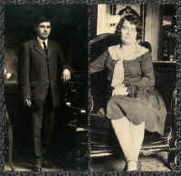
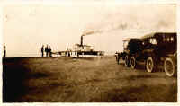
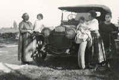
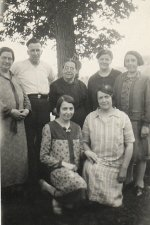
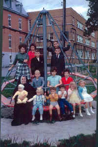

|

 Marie-Anna
and Rosario marry on January 16, 1917, in Saint-Zotique parish in Montréal. They are
both under age; it is a simple wedding because Rosario is
in mourning for his father. His guardian has to consent to the marriage.
Marrying young is perfectly normal at the time, and young couples
usually move in with one set of parents or the other. But
Rosario and Marie-Anna are lucky enough to have their own home from the very start of
their marriage: Marie-Anna simply joins Rosario in his parents' house, furniture
and all, at 1121 rue Saint-Antoine. Alphonse Charette
Jr. had built this house for his
family in 1907. It
is plausible that Alexandre, Rosario's fifteen-year-old
brother, lived with the new couple;
otherwise he was taken in by their guardian. Marie-Anna
and Rosario marry on January 16, 1917, in Saint-Zotique parish in Montréal. They are
both under age; it is a simple wedding because Rosario is
in mourning for his father. His guardian has to consent to the marriage.
Marrying young is perfectly normal at the time, and young couples
usually move in with one set of parents or the other. But
Rosario and Marie-Anna are lucky enough to have their own home from the very start of
their marriage: Marie-Anna simply joins Rosario in his parents' house, furniture
and all, at 1121 rue Saint-Antoine. Alphonse Charette
Jr. had built this house for his
family in 1907. It
is plausible that Alexandre, Rosario's fifteen-year-old
brother, lived with the new couple;
otherwise he was taken in by their guardian.
Rosario received a
good inheritance from his father but, since he is under age, his uncle and guardian, Aldéric
Lavoie, manages his property. Aldéric is a carpenter, but he also has
a business selling wood, coal and ice in Saint-Henri.
Rosario works for him during the first years of his marriage.
According to
Fleurette Lavoie, Rosario's cousin, he and Marie-Anna "made a handsome
couple". There is no doubt that Rosario loves his wife dearly, and he will
treat her "like a queen" all his life.
Through the
Lovell directories* we can follow Rosario's family,
and also learn what he did for a living.
From 1917 to 1919 the young
couple lives at 1121 Saint-Antoine; Rosario is listed as ice mcht.
From 1919 to 1923 they live at 444 Sainte-Émélie, diagonally across from
Marie-Anna's mother, Alphonsine, who lives at 455 Sainte-Émélie. Rosario's occupation is listed as mech.
From 1924 to 1926 they live at 284 Saint-Philippe.
From 1926 to 1928 they are at 266 Saint-Philippe. Rosario is listed as wood &
coal 1117 St-Antoine. 1117 St-Antoine is right at the corner of Saint-Philippe, on the site of the garage Rosario will
later have built.
|
Life together for Marie-Anna and Rosario begins in rather
stormy times, and the
war drags on in Europe. The
influenza
Spanish flu sweeps across
America. Rosario
must surely fear for his young family, having lost brothers and sisters to epidemics at the turn of the century.
On April 25, 1919, Alphonse
Charette,
Rosario's grandfather and godfather, dies suddenly. It is a
great loss for him, since his grandfather had
surely taken his father's place; he must have counted on his
support and advice.
On August 13, 1924, Rosario suffers another loss. His only
brother, Alexandre, single and a pharmacy student at
the Université de Montréal, is killed in a car
accident.
In 1926
Rosario's family
moves to 266 Saint-Philippe, which will become 910 when the street
numbers change in 1928. They
live on the ground floor of this three-storey building
for more than ten years. Rosario rents out the upper
floors. It is very close to
the corner of Saint-Antoine, where Rosario works. He is said to have
owned several other properties inherited from his
father and his brother. The family often goes to the
country to visit relatives and friends who have cottages. They also rent
cottages themselves for the holidays. The family also travels to the
Saguenay region to visit Marie-Anna's relatives. One of them
had multiple sclerosis, and Rosario is said to have built a kind of
wheeled cart so he could get around (Story
passed on by Ghislaine, who heard it from her family).
Rosario loves
cars and changes them often. He gets that from his father and his
grandfather Charette. 1926
Rosario's family
moves to 266 Saint-Philippe, which will become 910 when the street
numbers change in 1928. They
live on the ground floor of this three-storey building
for more than ten years. Rosario rents out the upper
floors. It is very close to
the corner of Saint-Antoine, where Rosario works. He is said to have
owned several other properties inherited from his
father and his brother. The family often goes to the
country to visit relatives and friends who have cottages. They also rent
cottages themselves for the holidays. The family also travels to the
Saguenay region to visit Marie-Anna's relatives. One of them
had multiple sclerosis, and Rosario is said to have built a kind of
wheeled cart so he could get around (Story
passed on by Ghislaine, who heard it from her family).
Rosario loves
cars and changes them often. He gets that from his father and his
grandfather Charette.
|
 Rosario, Thérèse and Benoît
Rosario, Thérèse and Benoît
|
 : :
Thérèse, Benoît, 1924
|
Rue St-Philippe,
Gérard, Benoît, Jean-Noël
|

Waiting for the ferry, Saguenay, around 1921
|

Alphonsine, Thérèse, Benoît, Marie-Anna and
Lydia Bédard, a cousin of Marie-Anna, 1921
|
In November 1928 Rosario files at Montréal city hall
the plans for a garage he wants to build at 4271 Saint-Antoine.
Note that the same
year the street numbering changes and
1117 Saint-Antoine becomes
4271. In 1930, the Garage Philippe appears for the first time at 4271
Saint-Antoine, corner of Saint-Philippe,
in the Lovell directory. Rosario is clearly identified as the owner,
and remains so until 1938.
|
  
   |
|

Garage
Philippe, Rosario's garage |

The garage in 2006, photo by David
|
THE "GARAGE PHILIPPE", A MODERN GARAGE
The garage's gas pumps
are open
24 hours a day, 7 days a week. The garage has four floors; cars are taken
up to the floors by an elevator. That is where Rosario's young sons
learn to drive. Rosario's employees
have fun letting
the boss's sons drive the cars in and out of
the elevator (Gérard's
recollection).
Rosario's accountant is Henri Philippe, who is also one of his
tenants. His wife, Imelda Verreault, is a good
friend of Marie-Anna's. Their daughter Rachel will marry Rosaire,
Rosario's son.
At 4277 Saint-Antoine
(part
of the garage's ground floor)
Rosario rents a shop from the start, and until 1939, to
Napoléon Lapierre,
who sets up a shoe-repair shop there.
|
In 1929,
on October 12, Marie-Anna loses her mother, Alphonsine Gagnon. On October 24, Black
Thursday, comes the stock market crash that sets off
a severe worldwide economic crisis.
Rosario builds his business all the same. But
financially harder years lie ahead for him; it seems
he is poorly advised and is not the shrewdest
businessman. He does not have a "head for business", and he is very
generous with everyone.
In 1935, on
April 26, Rosario's grandmother,
Rosianne Miron, widow of Alphonse Charette Sr., dies. She was the last
pillar and the centre of the great Charette family of Saint-Henri.
|


|
Rosianne
gathered many children, grandchildren and
great-grandchildren around her. Her big stone house, built
by her husband at 4230 St-Antoine, had seen countless
family gatherings to mark happy or
sorrowful moments. The basement was set aside
especially for these gatherings, and there was even a
kitchen fitted out for receptions. Several people played the piano and
other instruments, and everyone had a good time
at these parties. They sang, danced and played cards.
(Story
passed on by Ghislaine, who heard it from Rita and Fleurette Lavoie,
Rosario's cousins)
|
In
the late 1930s Rosario is ill;
his son Jean-Noël remembers a home nurse
putting cupping glasses on his father's back as he leaned over the
living-room piano. What illness does he have? Ghislaine remembers always
hearing that her father had a "coeur de boeuf" (an ox heart),
that is, a heart problem that kept him from heavy physical
exertion.
Rosario rents out his whole garage for $100 a month,
no longer able to run his business. Shortly afterwards, his
tenant sublets each floor for $500 a month to
the Canadian army! Rosario "takes it personally"
(Jean-Noël's recollection), that is, he sees it as
proof of his incompetence in business. This financial loss, on top of
others, undermines the morale of the discouraged Rosario and deals him a
fatal blow.
From the Lovell directory* of
1939-1940 we learn that Rosario has sold 910 Saint-Philippe to
"Ménard Vic et Daoust Miss
Cecile" and that he has
moved
to 339 Saint-Philippe. As for his business, we
can assume he sold it too, since
4271 Saint-Antoine has become the Garage Bessette.
 Rosario
dies on May 21, 1940, at the age of 42. His cousin Yolande Lavoie, who has just finished her nursing course, is at his bedside
the night he dies. She had
looked after Rosario in his last days, and also Marie-Anna, sorely
tried by her husband's illness, and the youngest
children. (Story
passed on by Ghislaine, who heard it from Rita and Fleurette Lavoie,
Rosario's cousins) Rosario
dies on May 21, 1940, at the age of 42. His cousin Yolande Lavoie, who has just finished her nursing course, is at his bedside
the night he dies. She had
looked after Rosario in his last days, and also Marie-Anna, sorely
tried by her husband's illness, and the youngest
children. (Story
passed on by Ghislaine, who heard it from Rita and Fleurette Lavoie,
Rosario's cousins)
Marie-Anna has to seek advice and plan her
finances. Her
youngest is not yet five and her sons are still in school; as for
herself, she has no work experience. She must therefore make sure
that the inheritance she receives from her husband is managed
so that it can provide for her needs for the rest of her
life.
 In 1941 Marie-Anna moves to 7965 rue Saint-Gérard. She lives there
for several years, marries off her children from there and goes on raising her
youngest, Ghislaine, whom she sends to board at the convent in Saint-Aimé
as soon as she reaches school age. Another
war began in 1939, and two of
her
sons serve in it, Gérard in the regular army and Rosaire
in the air force. Since housing is scarce
at that time, some of her children live with her during the first
part of their married lives.
In 1941 Marie-Anna moves to 7965 rue Saint-Gérard. She lives there
for several years, marries off her children from there and goes on raising her
youngest, Ghislaine, whom she sends to board at the convent in Saint-Aimé
as soon as she reaches school age. Another
war began in 1939, and two of
her
sons serve in it, Gérard in the regular army and Rosaire
in the air force. Since housing is scarce
at that time, some of her children live with her during the first
part of their married lives.
|
A MODERN
WOMAN
Marie-Anna is a modern
woman who loves the new electric household appliances that
make life easier. Electric irons and refrigerators
are not yet found in every home in the
1940s. In the early 1950s Marie-Anna is
photographed in her living room in front of her first television.
In the 1950s she has a shower stall installed
in her flat on rue Des Écores. Many people at the
time did not yet even have a bathtub or hot water.
In the early 1960s she has the first colour
television, even though no colour programs are broadcast yet
in Canada. Most of these items are bought in the United States
by her children when they go, for example, to New York. |


|
In 1952 Marie-Anna moves to rue
Des Écores in Saint-Barthélemy parish.  The following year she buys the six-unit building next door to the south and
moves into the ground floor, number 7082. Her sons Gérard and Jean-Noël
each rent
a flat there. The rents are her main income.
The following year she buys the six-unit building next door to the south and
moves into the ground floor, number 7082. Her sons Gérard and Jean-Noël
each rent
a flat there. The rents are her main income.
On May 24, 1957, Marie-Anna loses her
eldest son Benoît, who dies of widespread cancer. The family does not
keep in touch with his widow and Benoît's three daughters, after
a disagreement over a down payment Marie-Anna had lent
her son so he could build an Esso garage, with two rental
flats above it, in Saint-Luc, where he lived with his family.
In
1957 Marie-Anna moves into a seniors' residence
on boulevard Gouin and, a few years later, into a nursing home
in Marieville, as her health declines. Marie-Anna dies there
on July 8, 1966, at the age of 69, of cancer of the intestines.
|

An autumn Sunday,
1962
In front, Marie-Anna, Mrs.
Philippe, Ghislaine, Rachel, Jacqueline and baby Denis.
|

Rosaire's children
and Gérard's, visiting their grandmother in Marieville, and
Ghislaine
|

Rosaire's children
and Ghislain
|
*
The Lovell directories cover July 1 of one year to June 30
of the next. The information was gathered door to door
in May. In some directories owners are
marked with an asterisk. The occupation is often given,
as well as the employer. You can search by the person's name
or by address. They are available on the website
of the Archives
nationales (BAnQ).

|